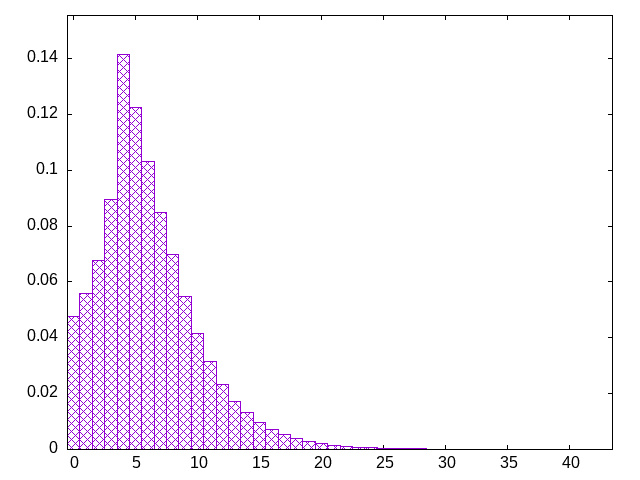

weight according to recentness -- inverse to drought
zilosltjoziilstjitzjsoszjilijzlzltstzjijsooilzsitjliisojlotsjlsztijotslzotlsiizozljijtsltozlijstziojzlojistzjslttozsilttzosjslisojzizojlotjslziiostzjssztlsotziztzjiliijostolsjstzjoitzzsjltliioszttjsojitzolojstistzotizjlitoosjjlioztiojstjitsojilttzzjolslijsoziostliztsjojlsilosjziooszjlttoiozjltiistzljsjostlzoitslotjilssosztjzotsljoztioljlztilsiolttjoszsiojilotoltszjjtizliszijtlsotjzitjjzizsotsiotzjjstlzlistojislszoiltssojilojiztlizstostlztstozsjiszllzjtoztjsloojztlsiztjljzjoszoijlitsoojzsolzsstjilitjlsoztttilzisjolijsiltztojozsziljtliosjszsojtlitiiolttsozjlliozjttoszloiliszotjsjstitolsjilzolzotlstoiljstlzjtsizjslizttsijlizoljszlttsotjlszzosijtlsozillsozijtjjoosoilstzjzljstiztsjltzjoiltzsjloostzisoltizsjtotjzslioitsztojioztlzjzzistlstjsiottjzljiossoiozisjtozljijltioitjloisjstzloisojlizitjjtolsozitsijloizszlttjloizsositlzijoiztjslstzlojizszoijltiojlsztjsoziostilzsijtloziotlzztlojolizjoltzitzsliojszojtjjjzilzostjoisioltslztijszlzosjlistjjltzolizstojiostjljoitozijitzsolsjitzjsositlizotjtzos
bagginess: 0.0589
bagginess6: 0.5059
distribution1_maxgap: 0.00010599999999999499
distribution2_maxgap: 0.015510015510015511
distribution3_maxgap: 0.002443004886009772
distribution4_maxgap: 0.0003560010680032041
diversity: 5.5
entropy: 11.007
evenness_diff: 5.775
evenness_same: 4.598
maxdrought: 42.7
maxflood: 5
peakdrought: 4.0
repchance: 0.0471
seq4_coverage: 1.0000
seq4_follow: 7.457
drought_graph:

similarity: (lower is more similar)
| 0.012 | weight_lin_pure |
| 0.024 | weight |
| 0.041 | balanced5 |
| 0.045 | deepbag_window4 |
| 0.065 | bag2 |
| 0.073 | shift7 |
| 0.095 | seamless_deep_pure |
| 0.102 | tgm |
| 0.107 | tgm_pure |
| 0.126 | wet2 |
| 0.132 | bag |
| 0.132 | bag_pure |
| 0.139 | shift3_5 |
| 0.172 | deepbag_fixed7 |
| 0.182 | seamless_bag2_pure |
| 0.195 | deepbag_window7 |
| 0.200 | nes_pure |
| 0.232 | shift10_5 |
| 0.232 | balanced7 |
| 0.233 | bag3 |
| 0.234 | nes |
| 0.235 | tgm_tap_pure |
| 0.236 | tgm_tap |
| 0.245 | deepbag_window10 |
| 0.251 | seamless_bag3_pure |
| 0.255 | balanced9 |
| 0.257 | weight_exp |
| 0.274 | deepbag_fixed10 |
| 0.276 | bag4 |
| 0.278 | shift14 |
| 0.309 | weight_exp_pure |
| 0.316 | deepbag_fixed4 |
| 0.318 | ti |
| 0.320 | balanced_long_add_pure |
| 0.328 | shift21 |
| 0.345 | balanced_long_mul_pure |
| 0.430 | wet_pure |
| 0.438 | seamless_bag_pure |
| 0.491 | fullrandom_pure |
| 0.498 | fullrandom |
| 0.595 | wet |
| 2.095 | shift1_75 |
| 2.219 | repeat_recent_pure |
| 4.344 | repeat_last_pure |
| 7.864 | flatbag |
| 7.864 | flatbag_pure |